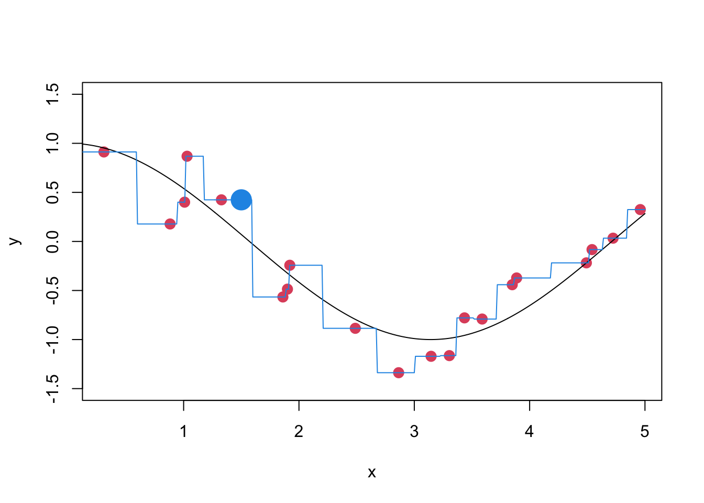
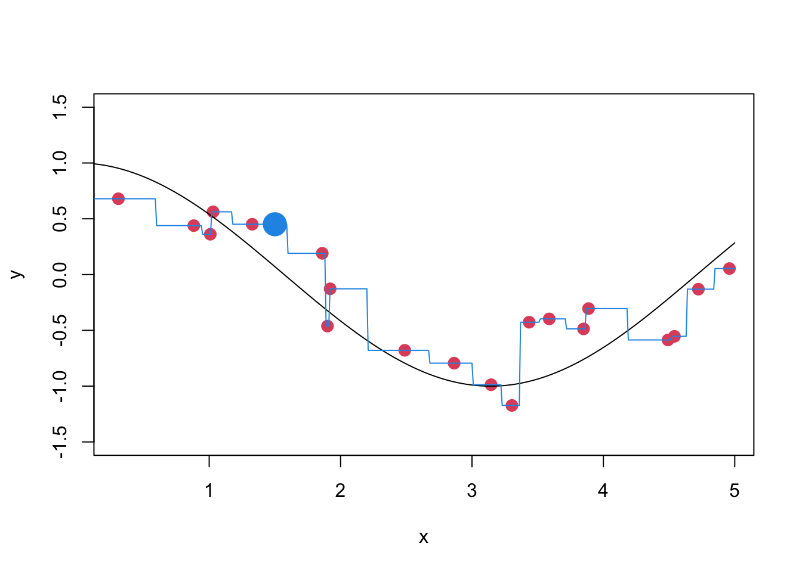
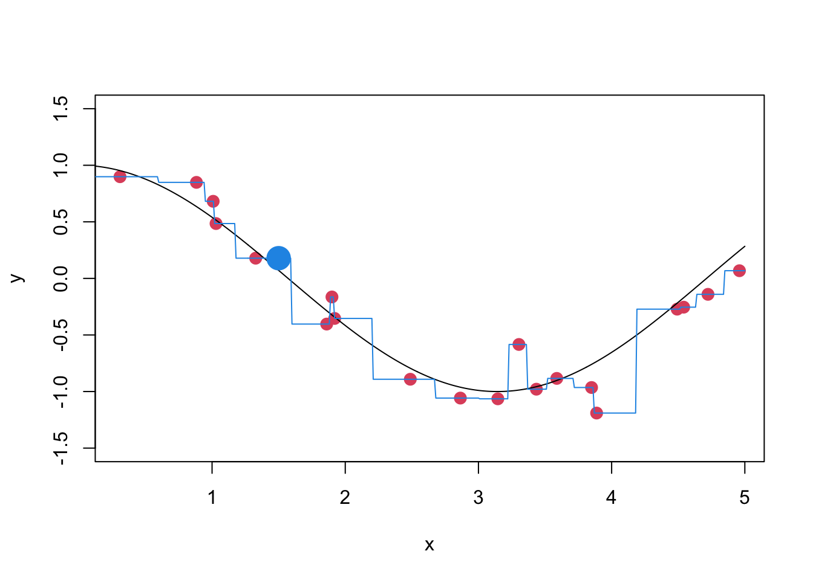
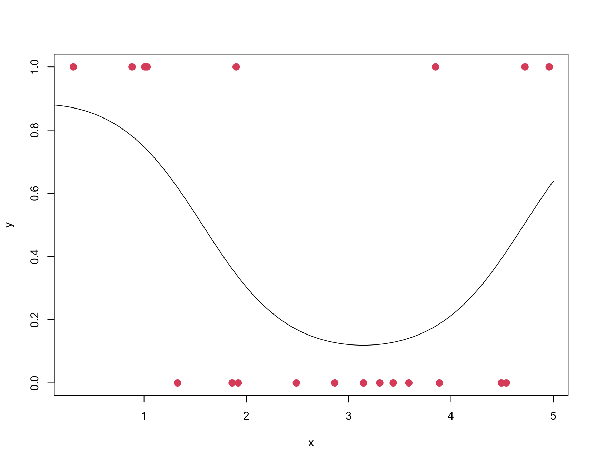

# x0 = new point at which to predict y
# x = (x_1,...,x_n) = vector of training x's
# y = (y_1,...,y_n) = vector of training y's
# K = number of neighbors to use
# y0_hat = predicted value of y at x0
KNN = function(x0, x, y, K) {
distances = abs(x - x0)
o = order(distances)
y0_hat = mean(y[o[1:K]])
return(y0_hat)
}K-nearest neighbors (KNN) regression and classifier
KNN regression algorithm (for univariate \(x\)’s)
We create a function called KNN for performing KNN regression using the following arguments:
- \(x_0\) as the new point at which we wish to predict \(y\)
- \({\bf x} = (x_1,x_2, \dots, x_n)\) as the vector of training \(x\)’s
- \({\bf y} = (y_1,y_2, \dots, y_n)\) as the vector of training \(y\)’s
- \(K\) as number of neighbors to use
- \(\hat{y}_0\) as the predicted value of \(y\) at \(x_0\)
The function calculates the Euclidean distance between \(x_0\) and each of the \(x_i\)’s in the training set \((x_1, x_2, \dots, x_n)\). Then we order them from nearest to furthest away and takes the mean of the \(y\) values of the \(K\) nearest points yielding the predicted value of \(y\):
Where do we get \({\bf x}\) and \({\bf y}\)?
Simulate training data
We simulate training vector \(\bf{x}\) from a uniform distribution on the interval \([0,5]\) and simulate training vector \(\bf{y}\) by assuming \[y = f(x) + \varepsilon\] where \(f(x) = \cos(x)\) and \(\varepsilon \sim N(0, \sigma^2)\) and \(\sigma = 0.3\).
set.seed(1) # set random number generator
n = 20 # number of samples
x = 5*runif(n)
sigma = 0.3
f = function(x) { cos(x) }
y = f(x) + sigma*rnorm(n) Plot of the training data
plot(x,y,col=2,pch=20,cex=2) # plot training data
x_grid = seq(from=0, to=5, by=0.01) # grid of x values for plotting f(x) values
lines(x_grid,f(x_grid)) # plot true f(x) values for the grid
Predicting values
Now we run the KNN function to predict \(y\) at each point on the grid of \(x\) values. For that we need to define \(K\), that is number of nearest neighbors to use. We start with setting it equal to 1 but this can be changed later as an exercise.
K = 1
y_grid_hat = sapply(x_grid, function(x0) { KNN(x0, x, y, K) })Next we add the predicted values to our plot:
plot(x,y,col=2,pch=20,cex=2) # plot training data
title(paste("K =",K))
lines(x_grid,f(x_grid)) # plot true f(x) values
lines(x_grid,y_grid_hat,col=4) # plot predicted y values 
What happens to predicted curve when you change the value of \(K\)?
Bias-Variance Trade-Off
We are going to run through some code in order to illustrate the trade-off between bias and variance. We set \(x_0\) to 1.5, which is the point we wish to estimate \(y\) at.
We simulate 10000 data sets to approximate expectations over the \(Y\)’s (given fixed \(x\)). We initialize two vectors of zeros to hold predicted and true \(y\) values at \(x_0\). Then for each of the 10000 datasets simulated, we repeat the above syntax for prediction. For the first 5 datasets simulated, we plot out the results to see what is happening.
K = 1
x0 = 1.5
n_datasets = 10000
y0_hat = rep(0,n_datasets)
y0 = rep(0,n_datasets)
for (i in 1:n_datasets) {
y = f(x) + sigma*rnorm(n)
y0[i] = f(x0) + sigma*rnorm(1)
y0_hat[i] = KNN(x0, x, y, K)
if (i <= 5) {
plot(x,y,col=2,pch=20,cex=2,ylim=c(-1.5,1.5))
lines(x_grid,f(x_grid))
y_grid_hat = sapply(x_grid, function(x0) { KNN(x0, x, y, K) })
lines(x_grid,y_grid_hat,col=4)
points(x0,y0_hat[i],pch=20,cex=4,col=4) # plot predicted value of y at x0
}
}




Next we calculate the bias and variance of the KNN predictions at \(x_0\).We also compute the variance of the noise at \(x_0\) in order to be able to get the test MSE both using the bias variance representation \[\textrm{test MSE} = \textrm{bias}^2 + \textrm{variance} + \textrm{noise}\] and the direct formula: \[\mathop{\mathbb{E}} \left(y_0- \hat{f}(x_0)\right)^2\]
bias = mean(y0_hat) - f(x0) # bias of KNN predictions at x0
variance = var(y0_hat) # variance of KNN predictions at x0
noise = sigma^2 # variance of the noise at x0
bias^2 + variance + noise [1] 0.2086705mean((y0 - y0_hat)^2) [1] 0.2097131Why do you think the two values differ?
Homework 1.1 (6 points)
Visualize and explain the bias-variance trade-off using the syntax above. You need to explain and show how the bias, variance and test MSE is influenced by the choice of \(K\). For full points, three plots should be included showing the following:
- bias vs. \(K\) (or flexibility)
- variance vs. \(K\) (or flexibility)
- test MSE versus \(K\) (or flexibility)
KNN classifier algorithm (for univariate \(x\)’s and binary \(y\)’s)
We are going to look at the probability version of the KNN classifier algorithm. We create a function called KNN_classifier for performing KNN classification using the following arguments:
- \(x_0\) as the new point at which we wish to predict \(y\)
- \({\bf x} = (x_1,x_2, \dots, x_n)\) as the vector of training \(x\)’s, where \(x_i\) is real-valued
- \({\bf y} = (y_1,y_2, \dots, y_n)\) as the vector of training \(y\)’s, where \(y_i\) is 0 or 1
- \(K\) as number of neighbors to use
- \(\hat{p}_{1}\) as the estimated probability of \(y_0=1\) given \(x_0\)
The function calculates the Euclidean distance between \(x_0\) and each of the \(x_i\)’s in the training set \((x_1, x_2, \dots, x_n)\). Then we order them from nearest to furthest away and computes the fraction of \(y\) values of the \(y\) values of the \(K\) nearest training points that are equal to 1 and return this proportion as an estimated probability of \(y_0=1\). We can transform \(\hat{p}_{1}\) to a prediction of the \(y\) value at \(x_0\) by using a threshold on \(\hat{p}_{1}\) and return
KNN_classifier = function(x0, x, y, K) {
distances = abs(x - x0)
o = order(distances)
p1_hat = mean(y[o[1:K]])
return(p1_hat)
}Simulate training data
We simulate training vector \(\bf{x}\) from a uniform distribution on the interval \([0,5]\) and the true probability \(p_1(x)\) of \(y=1\) given \(x\) (true relationship between \(x\) and \(y\)) according to \[p_1(x) = \frac{\exp(2*\cos(x))}{(1 + \exp(2*\cos(x)))}\] We simulate simulate training \(y\)’s as Bernoulli random variables with probabilities \(p_1(x)\).
set.seed(1) # set random number generator
n = 20
x = 5*runif(n)
p1 = function(x) { exp(2*cos(x))/(1 + exp(2*cos(x))) }
y = rbinom(n,1,p1(x)) Plot of the training data
plot(x,y,col=2,pch=20,cex=2) # plot training data
x_grid = seq(from=0, to=5, by=0.01) # grid of x values
lines(x_grid,p1(x_grid)) # plot true p1(x) values for the grid
Predicting classes
Now we run the KNN_classifier function to predict \(y\) at each point on the grid of \(x\) values. For that we need to define \(K\), that is number of nearest neighbors to use. We start with setting it equal to 1 but this can be changed later as an exercise. Further, we predict the \(y\) values for each \(x\) in the grid by thresholding the estimated probabilities to \(\leq 0.5\) and \(>0.5\).
K = 1
p1_grid_hat = sapply(x_grid, function(x0) { KNN_classifier(x0, x, y, K) })
y_grid_hat = round(p1_grid_hat > 0.5) Next we add the predicted values to our plot:
plot(x,y,col=2,pch=20,cex=2) # plot training data
title(paste("K =",K))
lines(x_grid,p1(x_grid)) # plot true p1(x) values
lines(x_grid,p1_grid_hat,col=4) # plot estimated probabilities of y=1
lines(x_grid,y_grid_hat,col=4) # plot predicted y values for each x0
Error rates
The training error rate is given by \[\textrm{training error} = \frac{1}{n}\sum_{i=1}^n I(\hat{y_i} \neq y_i)\] So we first run KNN classifier (probability version) at each \(x\) in the training set, then we predict the \(y\) values for each \(x\) in the training set (prediction version of KNN), and finally compute the compute the training error rate which is the on average misclassification rate.
p1_hat = sapply(x, function(x0) { KNN_classifier(x0, x, y, K) })
y_hat = round(p1_hat > 0.5)
train_error = mean(y_hat != y)
print(paste0("Training error rate (K = ",K,") = ",train_error))[1] "Training error rate (K = 1) = 0"Now we compute the test error rate. We again simulate a large number of samples as test set, namely 10000. We simulate test \(x\)’s and test \(y\)’s and run the KNN classifier at each \(x\) in the test set. We then predict the \(y\) values for each \(x\) in the test set and compute the test error rate.
n_test = 10000
x_test = 5*runif(n_test)
y_test = rbinom(n_test,1,p1(x_test))
p1_test_hat = sapply(x_test, function(x0) { KNN_classifier(x0, x, y, K) })
y_test_hat = round(p1_test_hat > 0.5)
test_error = mean(y_test_hat != y_test)
print(paste0("Test error rate (K = ",K,"): ",test_error))[1] "Test error rate (K = 1): 0.2869"Homework 1.2 (4 points)
How can we tell if the above is a good test error rate? Compute the test error rate for the Bayes optimal classifier. Below you will find some incomplete code to assist you in this task. Note that the missing parts that you need to fill in are denoted by ‘XXX’. Please include the R code you used for this task.
# Bayes optimal classifier
# use the true p1(x) to make the best possible predictions on the training set
y_hat_optimal = p1(x) > 0.5
# compute the training error rate for the Bayes optimal classifier
train_error_optimal = mean(y_hat_optimal != y)
print(paste0("Training error rate (Optimal): ",train_error_optimal))
# use the true p1(x) to make the best possible predictions on the test set
y_test_hat_optimal = XXX
# compute the test error rate for the Bayes optimal classifier
test_error_optimal = XXX
print(paste0("Test error rate (Optimal): ",test_error_optimal))